🎮 Stage 0 | 여정의 시작
던전앤코파일럿의 세계에 오신 것을 환영합니다!

🐾 캣파일럿과 함께 떠나는 6개의 퀘스트!
이번 여정의 파트너는 Microsoft 365 Copilot입니다.
시장 트렌드 탐색부터 데이터 분석, 자료 작성, 창의적 기획까지, 보드게임처럼 한 칸씩 퀘스트를 클리어하며 나만의 식당을 완성하는 실습형 여정이 시작됩니다. Copilot을 전략적으로 활용해 보세요!
동료들과 아이디어를 나누면 재미는 두 배! 자, 첫 번째 퀘스트로 출발할까요? 😼
🔭 Stage 1 | 트렌드를 알아보자
요즘 핫한 건 뭐지? 이번 스테이지에서는 외식업 트렌드를 빠르게 탐색해봅니다.

- 아래 버튼으로 실습 PDF 파일을 다운로드합니다.
- https://m365.cloud.microsoft/chat/에 접속하여 Copilot Chat으로 이동합니다.
- 프롬프트 입력창 왼쪽의 + 버튼을 눌러 다운로드한 PDF 파일을 직접 업로드합니다.
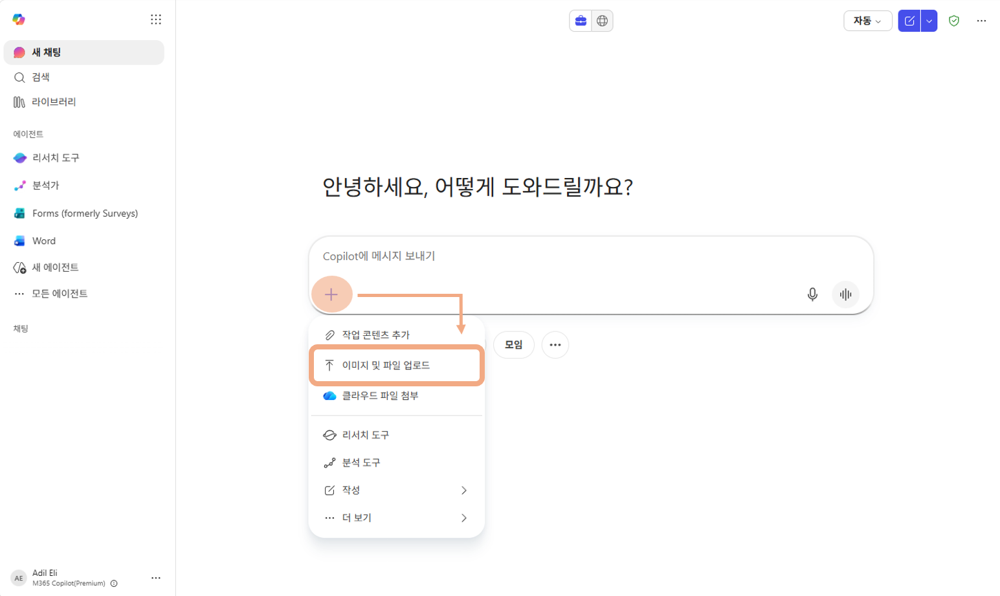
💡 Copilot Chat 파일 첨부 방법
① + 버튼, 로컬 PC 파일을 바로 업로드합니다. 이번 Stage처럼 1회용으로 간단히 사용할 때 편리해요.
② / 슬래시, OneDrive에 저장된 파일을 불러옵니다. 이후 Stage에서 같은 파일을 반복 참조할 때 유용합니다. (Stage 3→4 Excel 파일 분석에서 활용) - 아래의 샘플 프롬프트를 입력합니다. 파란색으로 표시된 항목은 클릭해서 원하는 값으로 바꿔보세요!
외식 산업 리포트 문서를 이해하고 인사이트를 도출합니다.
/2026_식품외식산업_7대이슈.pdf 와 /2025_식품외식산업_7대이슈.pdf 에서 연도별 주요 이슈와 언급된 예시들을 요약해서 작성해줘.
각 연도의 7대 이슈를 한 문장씩 요약하고 이슈별 공통점과 차이점을 표로 정리해줘.
2026년과 2025년 이슈 중 [키워드1]과 [키워드2]의 성장률, 시장 규모, 주요 성장 동인 변화를 비교해줘.
💡 예시 키워드: "밀키트"와 "배달앱" / "건강식"과 "비건" / "1인 가구"와 "프리미엄 간편식"
🧩 Stage 2 | 정보를 확장하고 정리하자
기존 데이터만으로는 부족하다면? 최신 데이터를 추가로 수집하고 보고서 초안을 작성해 봅니다.

Stage 1에서 2025·2026년 리포트를 살펴봤다면, 이번엔 Copilot Chat의 웹 검색 기능으로 그 이전 연도 데이터도 직접 가져와봅니다. 수집한 정보는 보고서로 정리하고, Pages로 문서화하면 이후 Stage에서 바로 활용할 수 있습니다.
2025·2026년 리포트 외에 추가 데이터를 웹에서 수집합니다.
지난 2020년도부터 2024년까지의 식품외식산업 이슈는 어떤 것들이 있었는지 웹데이터를 기반으로 연도별로 정리해줘.
2027년도 키워드 예측해줘. 그 키워드로 제안할 수 있는 마케팅 전략과 대표적인 성공 사례도 알려줘.
수집한 정보를 종합해 팀에 공유할 수 있는 보고서 초안을 만듭니다.
지금까지 나눈 대화 내용을 바탕으로, 외식업 트렌드 분석 보고서 초안을 작성해줘. 주요 이슈 요약, 연도별 변화 흐름, 2027년 예측 키워드, 그리고 창업에 활용할 수 있는 시사점 순서로 구성해줘.
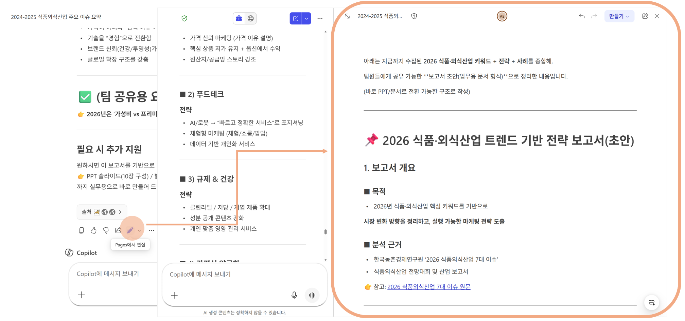
📊 Stage 3 | 데이터를 분석하자
통계 데이터를 기반으로 시장과 상권을 분석하고 인사이트를 도출합니다.
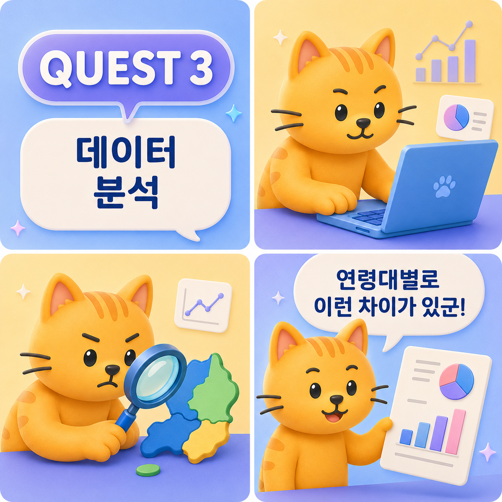
서울시, 거제시, 인천시 중 세션에 맞는 데이터를 선택하세요. 선택한 데이터에 맞춰 다운로드 파일과 샘플 프롬프트가 바뀝니다.
- 아래 버튼으로 실습 데이터 파일을 받습니다.
파일이 Excel 웹에서 열리면 오른쪽 상단의 복사본 편집 버튼을 클릭합니다, Copilot 기능을 쓰려면 파일이 내 OneDrive에 저장되어 있어야 해요.
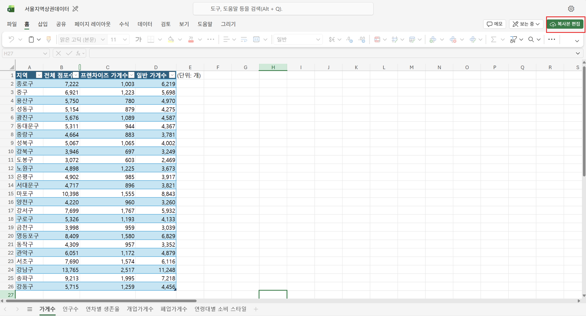
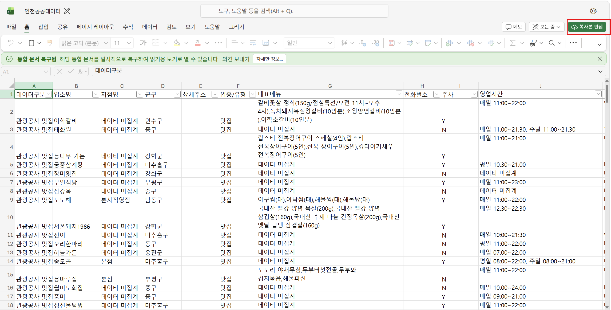
파일이 PC로 다운로드된 경우에는 OneDrive 웹에 업로드한 뒤 Excel 웹에서 열어주세요.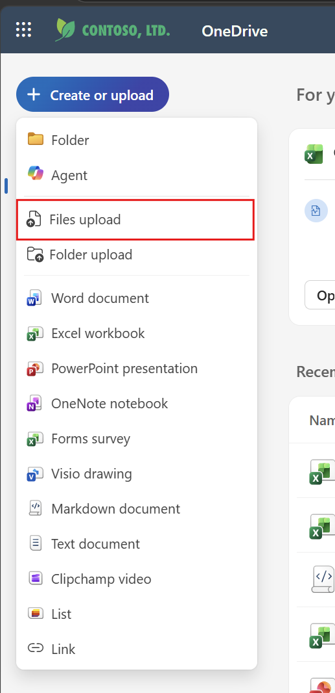
① Create or upload → Files upload
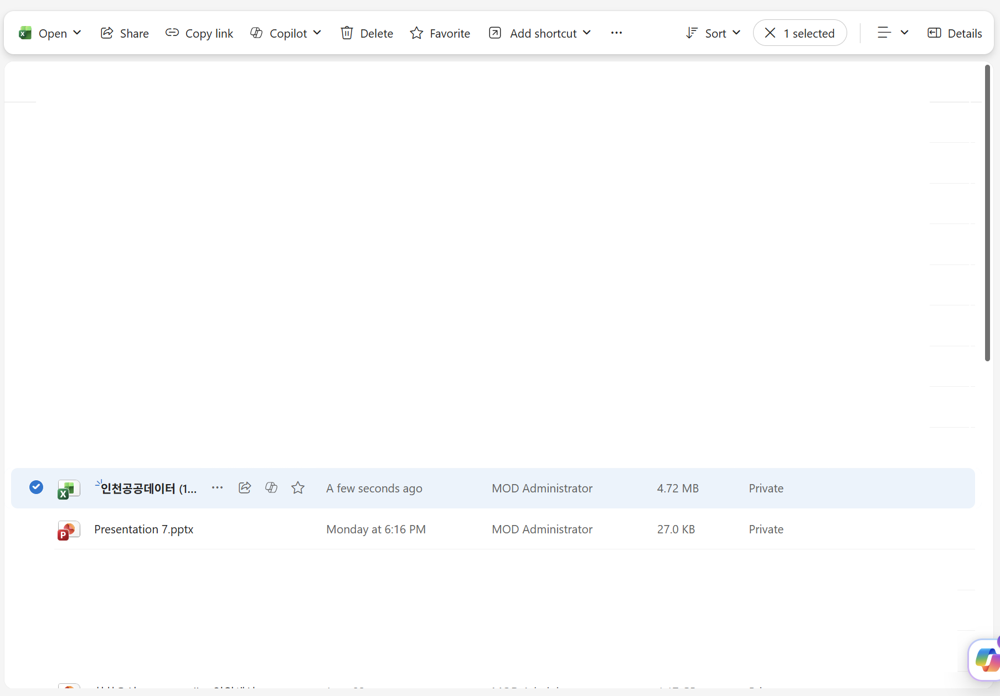
② 파일이 OneDrive에 올라온 것 확인
- Excel 오른쪽 패널의 Copilot 아이콘을 클릭합니다. 기본적으로 '통합 문서 편집(편집 허용)' 상태로 시작하며, 필요하면 '채팅만'으로 전환해 질문만 할 수도 있습니다.
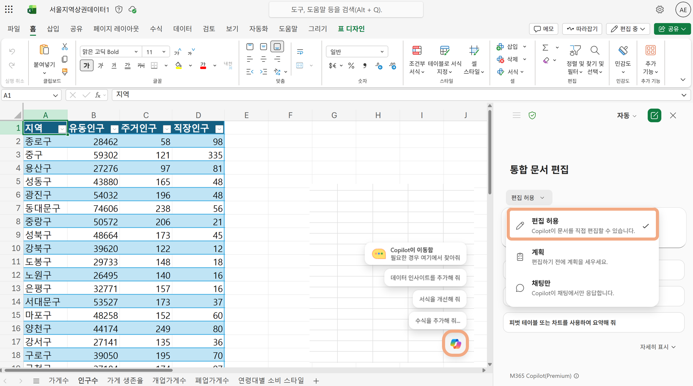
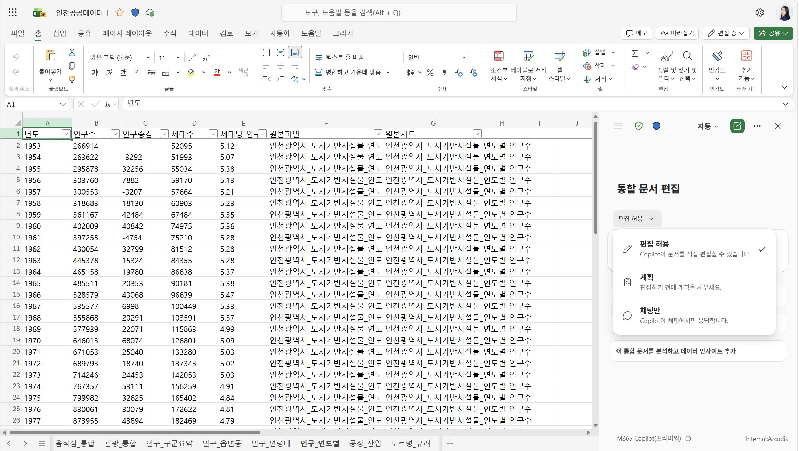
- 아래 샘플 프롬프트를 참고해 입력하고, 자유롭게 바꿔가며 데이터의 인사이트를 확인합니다.

선택한 데이터셋을 활용하여 데이터를 분석하고 인사이트를 확인합니다.
"유동인구비율" 컬럼(길단위 유동인구 ÷ (주거인구＋직장인구))을 추가하고, 값이 높은 상위 5개 지역을 강조해줘.
지역별로 "순증감(개업수−폐업수)"과 "개업/폐업 비율" 컬럼을 추가하고, 상권이 성장하는 지역은 초록, 위축되는 지역은 빨강으로 강조해줘. 24년 대비 26년 변화가 가장 큰 지역 3곳도 함께 짚어줘.
경쟁이 낮고 유동인구가 높은 블루오션 지역을 찾아 "블루오션 점수" 컬럼을 추가해줘.
이 데이터에서 식당 창업에 유망한 지역 TOP 5를 찾아줘. 어떤 지표를 활용했는지 이유도 함께 설명해줘.
경쟁이 낮고 수요가 높은 블루오션 지역이 있어? 데이터 근거로 추천해줘.
프렌차이즈 밀도와 생존율 사이에 어떤 관계가 있어? 독립 창업엔 어떤 지역이 더 유리해?
연령대별 소비 스타일 데이터를 활용해 [20대] 고객의 소비 특징을 요약하고, 이들을 겨냥한 식당 콘셉트와 마케팅 포인트를 표로 제안해줘.
이 데이터에서 창업 분석에 쓸 수 있는 핵심 지표를 추천해줘. 지역별로 집계하고 요약해줘.
단체 손님 수용이 가능한 음식점 유형을 찾고, 주차 가능 여부도 함께 분류해줘.
관광자원 수가 많은 지역 vs 인구 밀집 지역을 구분해서 두 컬럼을 만들어줘.
이 데이터를 분석해서 거제에서 식당 창업하기 좋은 지역 TOP 3를 추천해줘. 근거도 함께 설명해줘.
[타겟 고객]을 타겟으로 한다면 어떤 지역이 가장 적합해? 장단점을 표로 비교해줘.
관광자원 수와 인구수를 한눈에 볼 수 있는 차트를 만들고 인사이트를 3줄로 요약해줘.
이 데이터에서 군구별 음식점 수, 인구수, 기업체 직원 수를 집계하고, 창업 입지 분석에 가장 중요한 지표 3개를 추천해줘.
음식점이 적고 인구와 직장인(기업체 직원)이 많은 군구를 찾아서 "블루오션 점수" 컬럼을 추가해줘.
네이버 평점·인기도가 높은 맛집이 밀집한 군구와 직장인 수요가 높은 군구를 각각 컬럼으로 구분하고 상위 3곳씩 하이라이트해줘.
이 데이터를 분석해서 인천에서 식당 창업하기 좋은 군구 TOP 3를 추천해줘. 근거도 함께 설명해줘.
[타겟 고객]을 타겟으로 한다면 어떤 군구가 가장 적합해? 장단점을 표로 비교해줘.
군구별 음식점 수, 인구수, 기업체 직원 수를 한눈에 볼 수 있는 차트를 만들고 인사이트를 3줄로 요약해줘.
- Copilot 패널 상단의 모델 선택 메뉴에서 원하는 AI 모델을 고를 수 있습니다. 자동으로 두거나, GPT-5.5 / Claude Opus 4.7 등을 직접 선택해보세요. 동일한 프롬프트를 여러 모델로 실행해보고 결과 차이를 비교해보세요!
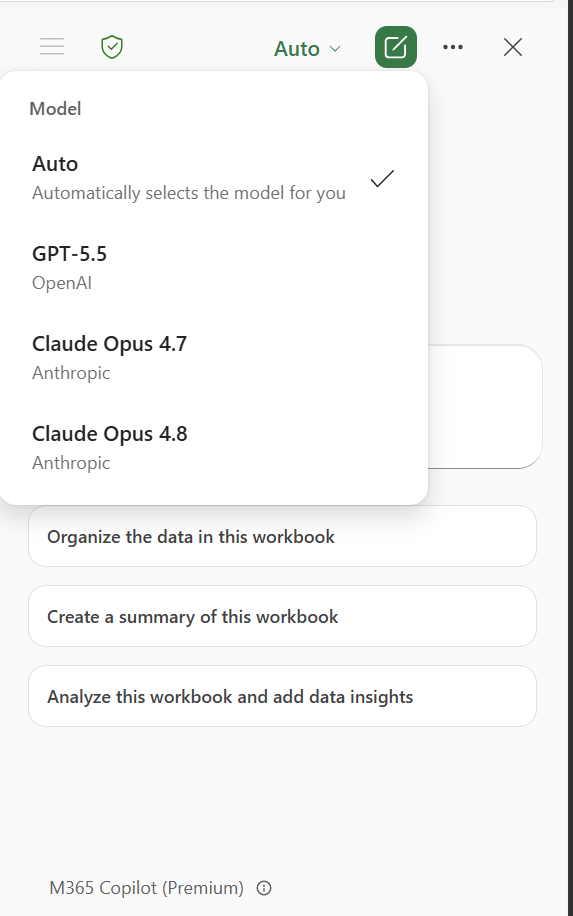
아래 프롬프트를 통해 심층 분석을 이어갑니다.
유동인구, 생존율, 개폐업 데이터를 종합해서 지역별 상권 활력 점수를 만들어줘. 어떤 가중치를 썼는지도 설명해줘.
상권 점수 상위 5곳과 하위 5곳의 특징 차이를 분석하고, 창업 전략 관점에서 시사점을 정리해줘.
개업가게수 연도별 트렌드를 시각화하고, 최근 급성장 중인 지역과 침체 중인 지역을 찾아줘.
나만의 창업 조건(예: 유동인구 상위 30%, 생존율 평균 이상, 프렌차이즈 비율 낮음)을 설정하고 조건에 맞는 지역을 필터링해줘.
관광객이용시설 수와 거제9미 음식점 수의 관계를 분석해줘
분류명(거제9미)별 평균 좌석수를 계산해줘
예약, 음식포장, 카드사용 가능 비율을 분류명별로 비교해줘
월별 인구수에서 남녀 인구 비율 변화를 정리해줘
거제 로컬 식당 입지 점수화 모델을 제안해줘
입지 점수화에 사용할 변수별 가중치 추천 요청
추천된 가중치로 지역별 입지 점수를 산출해줘
인천 창업 최적 입지 점수화 모델을 직접 만들어줘. 어떤 변수를 쓸지, 왜 그 가중치인지 근거도 설명해줘.
점수화 결과를 적절한 차트로 시각화하고, 상위 군구와 하위 군구의 특징을 비교해줘.
내가 [타겟 고객]을 타겟으로 한다면, 입지 점수 외에 어떤 추가 조건을 봐야 해? 최종 추천 군구 1곳을 골라줘.
🔥 Stage 4 | 인사이트를 더 깊게 분석하자
한층 더 깊은 분석을 위해 Copilot Chat을 활용하여 인사이트를 확장하고 시장, 상권, 타겟 고객을 구체화합니다.

트렌드 리서치, 보고서 초안, Excel 데이터 맥락이 대화 기록에 남아 있어 Copilot이 흐름을 이어갑니다.
대화 기록이 없거나 새로 시작하려면 https://m365.cloud.microsoft/chat/ 에서 새 대화를 열고, / 로 파일을 다시 선택하세요.
💡 프롬프트 안의 /파일명 처럼 생긴 파란 칩은 파일 참조(멘션)예요. 원래는 채팅창에서 / 를 입력해 목록에서 파일을 골라야 하지만, Copy 버튼으로 복사해서 붙여넣기만 하면 이 참조가 자동으로 세팅됩니다.
- Copilot Chat 대화에서 아래 샘플 프롬프트를 이어서 입력합니다. Stage 3에서 Excel 채팅만으로 나눈 대화 흐름이 여기 이어집니다. 프롬프트 안의 20대 같은 파란색 항목을 클릭하면 추천 옵션이 뜨거나 직접 입력해서 바꿀 수 있습니다.
Stage 3에서 Excel로 파악한 데이터를 Copilot Chat으로 가져와 시각화하고 깊은 인사이트를 도출합니다. 여기서 만든 차트와 분석 결과는 Stage 6 Word 문서에서 바로 활용됩니다.
/서울지역상권데이터.xlsx 파일을 참고해서 주요 지표를 요약해줘. 어떤 데이터로 식당 창업 입지를 분석할 수 있는지 설명해줘.
서울의 각 구 [유동인구]와 [가게수] 간의 관계를 시각화해줘. 모든 시각화 요청은 plotly를 이용해서 그래프를 그려줘
[중구] 개업/폐업 추이를 시각화해줘
유동인구수와 3년 생존율에 상관관계가 있어?
각 구의 유동인구와 3년 생존율을 히트맵으로 시각화해줘
프렌차이즈 비중과 전체 3년 생존율의 산점도 + 회귀선 + 상관계수를 그려 프렌차이즈 비중이 높을수록 생존율이 어떤 경향을 보이는지 알려줘
[20대]와 [40대]의 소비 스타일 선호도 차이를 막대 그래프로 시각화해줘
[20대]를 타겟으로 식당을 오픈하려고 해. [유동인구]와 [3년 생존율]을 참고하여 어떤 지역이 좋을지 2개 지역을 제안하고 장단점을 표로 비교해줘.
지금까지 분석한 서울 데이터를 바탕으로, 식당 창업을 위한 핵심 인사이트를 3가지로 정리해줘. 이 내용을 Word 보고서 서두에 쓸 수 있게 간결한 문단 형식으로 작성해줘.
/거제시공공데이터.xlsx 파일을 참고해서 주요 지표를 요약해줘. 어떤 데이터로 식당 창업 입지를 분석할 수 있는지 설명해줘.
거제 음식점의 [좌석수]와 [분류명] 간의 관계를 시각화해줘. 모든 시각화 요청은 plotly를 이용해서 그래프를 그려줘
거제9미 분류명별 음식점 분포를 시각화해줘
관광객이용시설 수와 음식점 수 사이에 상관관계가 있어?
주소지별 인구수와 음식점 수를 히트맵으로 시각화해줘
주차장유무와 좌석수를 기준으로 단체 고객에게 적합한 음식점 유형을 분석해줘
[가족 관광객]과 [지역 주민]의 식사 수요 차이를 막대 그래프로 시각화해줘
[가족 관광객]을 타겟으로 식당을 오픈하려고 해. [관광자원수]와 [인구수]를 참고하여 어떤 지역이 좋을지 2개 지역을 제안하고 장단점을 표로 비교해줘.
지금까지 분석한 거제 데이터를 바탕으로, 식당 창업을 위한 핵심 인사이트를 3가지로 정리해줘. 이 내용을 Word 보고서 서두에 쓸 수 있게 간결한 문단 형식으로 작성해줘.
/인천공공데이터.xlsx 파일을 참고해서 주요 지표를 요약해줘. 어떤 데이터로 식당 창업 입지를 분석할 수 있는지 설명해줘.
인천 각 군구 [인구수]와 [음식점 수] 간의 관계를 시각화해줘. 모든 시각화 요청은 plotly를 이용해서 그래프를 그려줘.
군구별 음식점 수, 인구수, 기업체 직원 수를 한눈에 볼 수 있는 차트를 만들고 인사이트를 3줄로 요약해줘.
군구별 [20~40대 인구] 비중을 계산해서 젊은 세대·직장인이 많은 군구를 찾아줘.
기업체 직원 수와 음식점 수 사이에 상관관계가 있어? 직장인 수요가 높은 군구를 분석해줘.
음식점 네이버 평점과 인기도가 높은 맛집이 밀집한 군구를 찾아 경쟁 강도를 비교해줘.
[타겟 고객]을 타겟으로 식당을 오픈하려고 해. [인구수]와 [기업체 직원 수]를 참고하여 어떤 군구가 좋을지 2개 지역을 제안하고 장단점을 표로 비교해줘.
지금까지 분석한 인천 데이터를 바탕으로, 식당 창업을 위한 핵심 인사이트를 3가지로 정리해줘. 이 내용을 Word 보고서 서두에 쓸 수 있게 간결한 문단 형식으로 작성해줘.
🎨 Stage 5 | 나만의 식당을 만들어보자
분석 결과를 바탕으로 나만의 식당 스토리와 브랜드 이미지를 구상합니다.
지금까지 트렌드를 읽고, 상권 데이터를 파헤쳤어요. 이제 그 인사이트를 가지고 여러분만의 식당을 만들 차례입니다. 앞서 Copilot Chat에서 나눈 대화를 그대로 이어서 진행하세요, 데이터에서 발견한 지역·타겟·트렌드가 자동으로 맥락이 됩니다. 샘플 프롬프트는 출발점일 뿐, 여러분만의 식당을 직접 만들어가보세요! 🍽️ 🎨
외식 트렌드와 시장·상권·타겟 분석을 바탕으로 어떤 가게를 만들지 아이디어를 모아봅니다.
앞에서 분석한 서울 데이터를 참고해서, [20대]를 타겟으로 하는 식당 아이디어를 3가지 제안해줘. [지역명] 상권의 유동인구와 생존율 데이터를 근거로 설명해줘.
그 중 가장 차별화된 컨셉을 골라, 흔하지 않고 서울 감성에 맞는 방향으로 구체화해줘.
[20대]가 SNS에서 발견하고 가고 싶어질 만한 마케팅 전략도 제안해줘.
앞에서 분석한 거제 데이터를 참고해서, [가족 관광객]을 타겟으로 하는 식당 아이디어를 3가지 제안해줘. 거제9미, 관광자원수, 인구 데이터를 근거로 설명해줘.
그 중 가장 차별화된 컨셉을 골라, 흔하지 않고 거제의 바다, 자연 감성에 어울리는 방향으로 구체화해줘.
[가족 관광객]이 SNS에서 발견하고 가고 싶어질 만한 마케팅 전략도 제안해줘.
앞에서 분석한 인천 데이터를 참고해서, [타겟 고객]을 타겟으로 하는 식당 아이디어를 3가지 제안해줘. 군구별 특성과 인구·직장인 수요를 근거로 설명해줘.
그 중 가장 차별화된 컨셉을 골라, 흔하지 않고, 인천의 항구 도시 감성과 어울리는 방향으로 구체화해줘.
[타겟 고객]이 SNS에서 발견하고 가고 싶어질 만한 마케팅 전략도 제안해줘.
어울리는 이름을 찾고 스토리를 만들어봅니다.
해당 컨셉을 바탕으로 [지역명]의 새로운 양식당에 어울리는 이름을 추천해줘.
한국식 느낌이 강하게 영어를 최소화한 퓨전 양식당 이름을 추천해줘.
프랑스어를 활용해서 매력적인 이름이 없을까?
[식당명] 이름에 맞는 식당을 오픈하려고 해. 2026년 트렌드를 반영해서 흥미로운 컨셉과 짧은 스토리, 홍보 아이디어를 제안해줘.
해당 컨셉을 바탕으로 거제의 새로운 로컬 퓨전 식당에 어울리는 이름을 추천해줘.
한국식 느낌이 강하게 영어를 최소화한 퓨전 양식당 이름을 추천해줘.
프랑스어를 활용해서 매력적인 이름이 없을까?
[식당명] 이름에 맞는 식당을 오픈하려고 해. 2026년 트렌드를 반영해서 흥미로운 컨셉과 짧은 스토리, 홍보 아이디어를 제안해줘.
해당 컨셉을 바탕으로 인천의 새로운 로컬 퓨전 식당에 어울리는 이름을 추천해줘.
한국식 느낌이 강하게 영어를 최소화한 퓨전 양식당 이름을 추천해줘.
프랑스어를 활용해서 매력적인 이름이 없을까?
[식당명] 이름에 맞는 식당을 오픈하려고 해. 2026년 트렌드를 반영해서 흥미로운 컨셉과 짧은 스토리, 홍보 아이디어를 제안해줘.
우리 식당 컨셉에 맞는 시그니처 메뉴를 구성합니다.
로컬×글로벌 퓨전 레스토랑 컨셉에 맞는 메뉴 5가지를 구성해줘.
이 메뉴들을 기반으로 레시피를 작성해줘.
메뉴판을 구성하기 위한 가격대, 플레이팅 스타일, 영양 정보를 작성해줘.
우리 식당에서만 맛볼 수 있는 특색 있는 시그니처 메뉴를 개발해줘.
거제 로컬×글로벌 퓨전 레스토랑 컨셉에 맞는 메뉴 5가지를 구성해줘.
이 메뉴들을 기반으로 레시피를 작성해줘.
메뉴판을 구성하기 위한 가격대, 플레이팅 스타일, 영양 정보를 작성해줘.
우리 식당에서만 맛볼 수 있는 특색 있는 시그니처 메뉴를 개발해줘.
인천 로컬×글로벌 퓨전 레스토랑 컨셉에 맞는 메뉴 5가지를 구성해줘.
이 메뉴들을 기반으로 레시피를 작성해줘.
메뉴판을 구성하기 위한 가격대, 플레이팅 스타일, 영양 정보를 작성해줘.
우리 식당에서만 맛볼 수 있는 특색 있는 시그니처 메뉴를 개발해줘.
Copilot Chat에서 식당을 대표하는 로고, 메뉴판, 홍보 포스터 이미지를 생성합니다. 생성한 이미지는 이후 PowerPoint 웹에서 발표 자료로 확장할 수 있습니다.
[식당명] 식당 컨셉에 맞는 로고 이미지를 생성해줘. 건강한 로컬×글로벌 퓨전 레스토랑 느낌이 나도록 초록색과 따뜻한 베이지 톤을 활용하고, 한글 요소도 자연스럽게 반영해줘.
우리 식당의 시그니처 메뉴를 잘 보여주는 메뉴판 이미지를 만들어줘. 메뉴명, 짧은 설명, 가격대가 보이고, 깔끔한 레스토랑 메뉴판처럼 구성해줘.
식당 오픈 홍보 포스터를 만들어줘. 20대 고객이 SNS에서 보고 저장하고 싶을 만큼 감각적이고, 메인 카피와 오픈 이벤트 문구가 잘 보이게 디자인해줘.
[식당명] 식당 컨셉에 맞는 로고 이미지를 생성해줘. 거제의 바다와 자연을 연상시키는 색감을 활용하고, 한글 요소도 자연스럽게 반영해줘.
우리 식당의 시그니처 메뉴를 잘 보여주는 메뉴판 이미지를 만들어줘. 메뉴명, 짧은 설명, 가격대가 보이고, 깔끔한 레스토랑 메뉴판처럼 구성해줘.
식당 오픈 홍보 포스터를 만들어줘. 관광객과 지역 주민 모두에게 어필하는 감각적인 디자인으로, 메인 카피와 오픈 이벤트 문구가 잘 보이게 만들어줘.
[식당명] 식당 컨셉에 맞는 로고 이미지를 생성해줘. 인천의 항구 도시 감성을 살리는 색감을 활용하고, 한글 요소도 자연스럽게 반영해줘.
우리 식당의 시그니처 메뉴를 잘 보여주는 메뉴판 이미지를 만들어줘. 메뉴명, 짧은 설명, 가격대가 보이고, 깔끔한 레스토랑 메뉴판처럼 구성해줘.
식당 오픈 홍보 포스터를 만들어줘. 관광객과 지역 주민 모두에게 어필하는 감각적인 디자인으로, 메인 카피와 오픈 이벤트 문구가 잘 보이게 만들어줘.
💡 이미지 결과가 마음에 들지 않으면 색감, 분위기, 구도, 포함할 텍스트를 구체적으로 다시 요청해보세요.

🌟 Stage 6 | 나의 식당을 소개합니다
모든 준비 완료! 시장 분석, 기획 의도, 메뉴까지 모든 것을 담은 브랜드 기획서를 완성합니다.

- Word 앱이 아닌 브라우저에서 Word 웹을 사용합니다. https://word.cloud.microsoft/에 접속하여 새 문서를 선택합니다.
- 우측 하단의 Copilot 아이콘을 클릭해 Copilot을 엽니다.
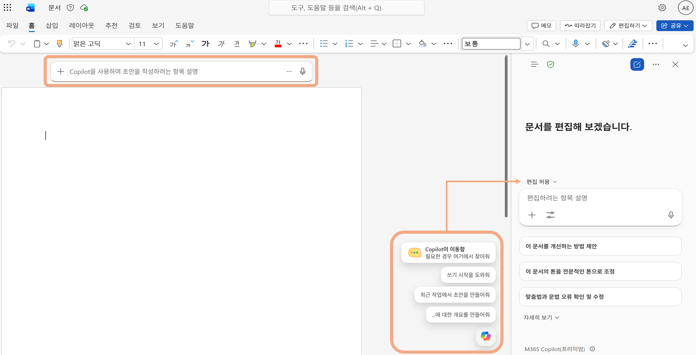
- 아래 샘플 프롬프트를 입력합니다. 파란색 항목을 클릭해 원하는 값으로 바꿔보세요.
내용을 종합하여 보고서 초안을 작성합니다. 아젠다를 제시하여 보고서의 템플릿에 맞게 작성합니다.
식당의 기획서를 작성하려고 해. 포함할 아젠다를 제안해줘.
다음 아젠다로 기획서 템플릿을 작성해줘. [1. 브랜드 개요, 2. 타겟 고객 분석, 3. 메뉴 및 서비스 구성, 4. 브랜드 아이덴티티, 5. 데이터 기반 마케팅 전략, 6. 목표 및 실행계획]
데이터 기반 마케팅 전략을 더 디테일하게 작성해줘. [1. 생존 예측, 2. 입지 선정 이유, 3. 경쟁 분석 및 차별화 전략]
- 각 아젠다의 내용을 Word Copilot으로 새로 작성하거나, 일부 영역을 선택하여 수정할 수 있습니다.
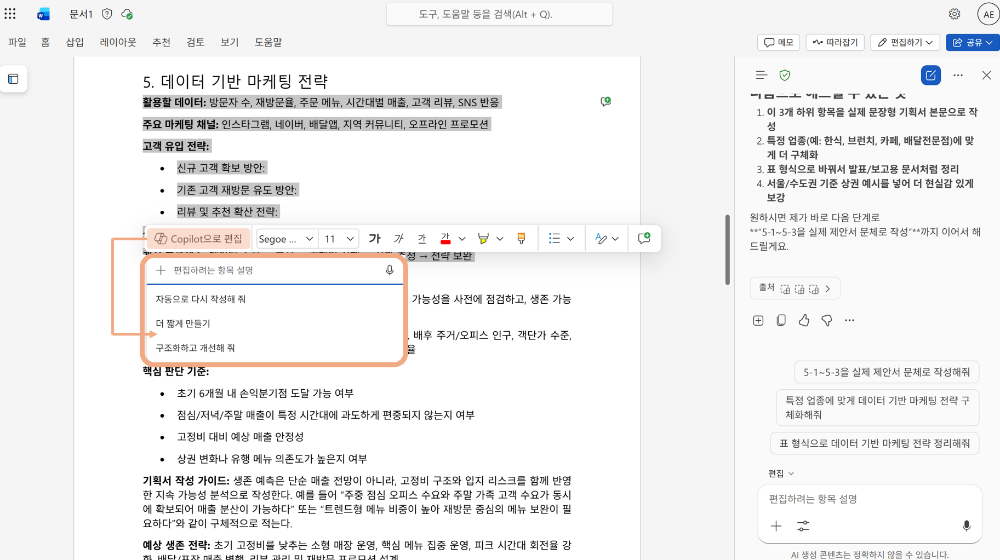
(빈 영역에서) 브랜드 개요를 작성하고 싶어. 나의 가게는 [아이디어 설명]과 [차별화 포인트]를 강조하는 브랜드 개요 초안을 전문적이고 간결하게 작성해줘.
(작성된 내용 일부 드래그 -> Copilot으로 편집) 이 내용을 간결하게 요약하고, 글머리 기호로 다시 작성해줘.
- Word 화면 내 Copilot Chat과 대화를 통해 내용을 이어서 작성할 수 있습니다. Copilot Chat 대화 기록에서 기존 답변(보고서 초안, Excel 차트 설명, 메뉴 구성표, 포스터 카피, 바이럴 캠페인 등)을 바로 문서에 추가할 수 있습니다.
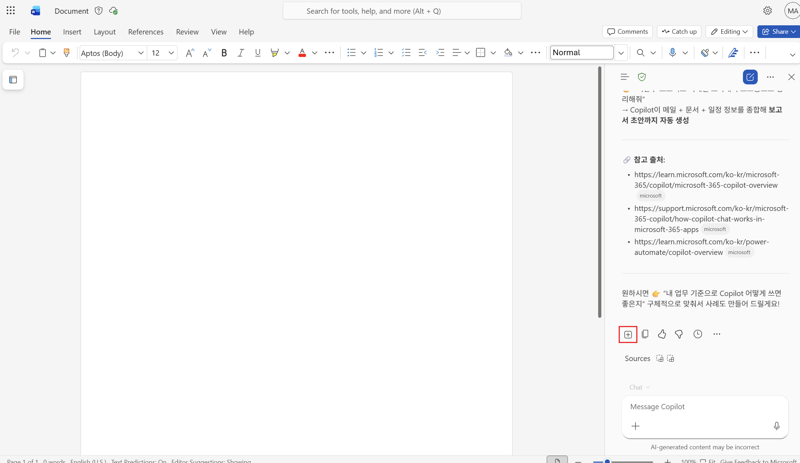
💡 답변 왼쪽의 + 버튼을 누르면 Copilot의 답변이 커서 위치에 바로 삽입됩니다. 앞 Stage에서 나온 분석 결과·메뉴 구성·브랜드 스토리를 그대로 가져와 기획서를 완성해보세요.

- PowerPoint 앱이 아닌 브라우저에서 PowerPoint 웹을 사용합니다. https://powerpoint.cloud.microsoft/에 접속한 뒤 새로 만들기 → 빈 프리젠테이션을 선택합니다.
- 우측 하단의 Copilot 아이콘을 클릭해 Copilot 창을 엽니다.
- 아래 샘플 프롬프트를 참고해 입력합니다. / 를 입력해 앞서 작성한 Word 기획서를 참조 파일로 선택하세요.
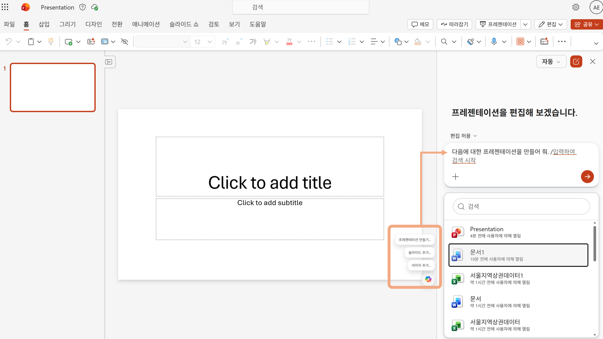
참조 파일(워드)을 사용하여 프리젠테이션을 만들 수 있습니다.
/(기획서 파일) 을 바탕으로 우리 식당을 소개하는 발표 자료를 만들어줘. 식당 컨셉, 타겟 고객, 메뉴 구성, 브랜드 아이덴티티 순서로 구성해줘.
/(기획서 파일) 을 바탕으로 투자자에게 설명하는 발표 자료를 만들어줘. 시장 데이터, 차별화 전략, 예상 수익 모델을 중심으로 설득력 있게 구성해줘.
/(기획서 파일) 을 바탕으로 동네 주민에게 새 맛집을 소개하는 발표 자료를 만들어줘. 따뜻하고 친근한 톤으로, 메뉴 하이라이트와 오픈 이벤트 정보가 잘 보이게 해줘.
/(기획서 파일) 을 바탕으로 SNS 마케팅 캠페인 기획안 슬라이드를 만들어줘. 타겟 채널, 콘텐츠 아이디어, 오픈 이벤트 플랜이 한눈에 들어오게 구성해줘.
💡 디자인 선택에서 원하는 템플릿을 지정하여 프리젠테이션을 생성할 수 있습니다.
- Copilot이 생성한 구조를 확인하고, 추가 또는 삭제를 선택하여 아젠다를 확정합니다.
- 특정 슬라이드에서 이미지를 생성하려면 Copilot Chat 패널을 열고, 프롬프트 입력창에 원하는 이미지를 요청합니다. 필요에 따라 이미지 모델도 직접 선택할 수 있습니다.
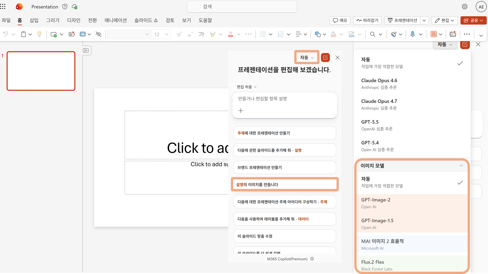
- Copilot이 생성한 슬라이드 구조를 확인합니다. 슬라이드를 직접 편집하거나, Copilot Chat에 "3번 슬라이드 내용을 더 구체적으로 써줘" 처럼 추가 수정을 요청할 수 있습니다.
- Stage 5에서 생성한 로고·메뉴판·홍보 포스터 이미지를 활용해 발표 자료의 핵심 메시지를 다듬습니다.
- 필요한 경우 PowerPoint 웹 안에서 슬라이드 디자인이나 이미지 생성을 요청해 시각 요소를 보강합니다.
PowerPoint 웹에서 발표 자료를 다듬을 때 사용할 수 있는 추천 프롬프트입니다.
전체 슬라이드 흐름을 검토하고, 설득력이 약한 부분을 찾아 개선해줘. 슬라이드 순서와 핵심 메시지도 다듬어줘.
표지 슬라이드를 더 임팩트 있게 바꿔줘. 우리 식당 컨셉과 타겟 고객이 한눈에 보이도록 레이아웃과 문구를 제안해줘.
앞에서 만든 로고, 메뉴판, 홍보 포스터 이미지를 이 발표 자료에 넣어줘. 어느 슬라이드에 배치하면 좋을지 제안하고, 캠페인 콘셉트를 한 슬라이드로 요약해줘.
이 발표를 위한 1분 오프닝 멘트와 예상 질문 3가지, 짧은 답변 스크립트를 작성해줘.
축하합니다! 🎉
모든 퀘스트를 완료하였습니다.
Copilot과 함께한 여정이 즐거웠기를 바랍니다.